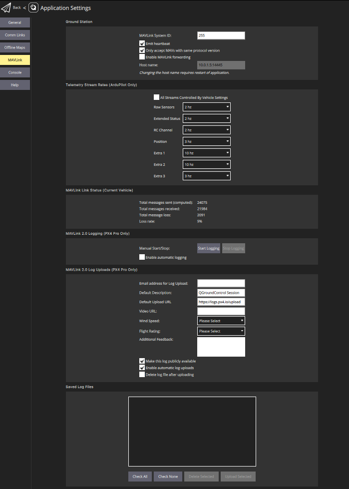
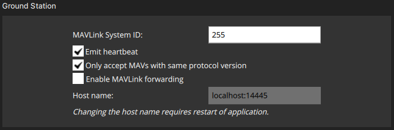
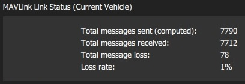
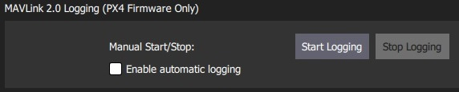
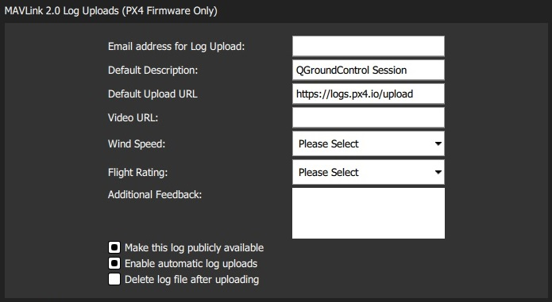
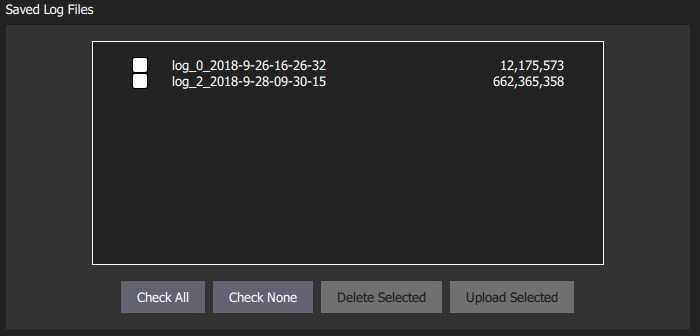

MAVLink Settings
The MAVLink settings (SettingsView > MAVLink) allow you to configure options and view information specific to MAVLink communications. This includes setting the MAVLink system ID for QGroundControl and viewing link quality.
The screen also allows you to manage MAVLink 2 Log Streaming (PX4 only), including automating log upload to Flight Review!

Ground Station
This section sets the MAVLink properties and behaviour of QGroundControl.

- MAVLink System ID: System ID of QGroundControl on the MAVLink network (Default: 255). Vehicles are typically allocated IDs from 1. You may have to specify another ID if there are multiple ground stations or MAVLink applications on the network.
- Emit heartbeat: Disable emission of regular MAVLink HEARTBEAT message (Default: True). Generally speaking, you should not turn this off.
- Only accept MAVs with the same protocol version: Set true to only connect to MAVLink 1 or to MAVLink 2 vehicles (Default: True).
- Enable MAVLink forwarding: Enable QGroundControl to forward MAVLink messages from connected vehicles to another UDP endpoint (Default: False). Note that this forwarding is one-way: from QGC to the specified host. Any MAVLink messages that are received from the specified host will be ignored.
Link Status
This shows the status of MAVLink message transfer over the communications link. A high Loss rate may lead to protocol errors for things like parameter download or mission upload/download.

MAVLink 2 Logging (PX4 only)
The MAVLink 2 Logging settings (PX4 only) configure real-time log streaming from PX4 to QGroundControl and upload of logs to Flight Review.
MAVLink 2 Logging cannot be used on "basic" setups because it requires a constant high-rate MAVLink connection to the vehicle (it may work over WiFI but will not work over a Telemetry link).
In theory log streaming allows real time analysis of data. At time of writing real-time analysis has not yet been implemented.
The log format is the same as for SD Card logs (downloaded using Analyze View > Log Download), but actual data logged may be slightly different because log start/stop time is controlled by QGroundControl and because some dropouts may occur when streaming over a lossy channel.
The MAVLink 2 Logging section allows you to manually start and stop logging, and to enable automatic capture of logs.

The MAVLink 2 Log Uploads section allows you configure uploading of MAVLink logs to Flight Review. You can specify all the fields that you would otherwise have to directly enter in the site, and also choose whether logs are automatically or manually uploaded.

The fields are:
- Email address for Log Uploads: Flight Review will email you a link to the upload at this address. This is important as otherwise you will have no way to access a non-public log after upload.
- Default Description: Description/name of flight used for log.
- Default Upload URL: URL for upload of the log/log metadata. This is set by default to the Flight Review URL.
- Video URL: (Optional) URL for video of flight associated with log. This may be included on the Flight Review page to ease analysis.
- Wind Speed: Used to aid debugging and filtering (from multiple flights). Allowed values: Calm | Breeze | Gale | Storm.
- Flight Rating: Used to aid debugging and filtering (from multiple flights). Allowed values: Crashed (Pilot Error) | Crashed (Software or Hardware Issue) | Unsatisfactory | Good | Great.
- Additional Feedback: (Optional). Enter a more detailed description of the flight or behaviour.
- Make this log publically available: If set, the log will be visible and searchable on Flight Review. If not set, it will only be available via the link emailed on upload.
- Enable automatic log uploads: If set, the log will automatically be uploaded on completion.
- Delete log file after uploading: If set, the log will automatically deleted after upload.
The Saved Log Files section is used to manually manage log uploads. Use the checkboxes and buttons to select logs, and either delete or upload them.
You can change the parameters in MAVLink 2 Log Uploads above to specify separate descriptions for uploaded logs.
